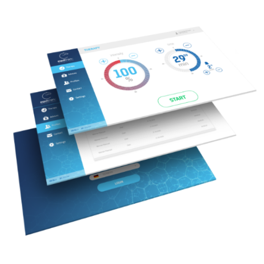
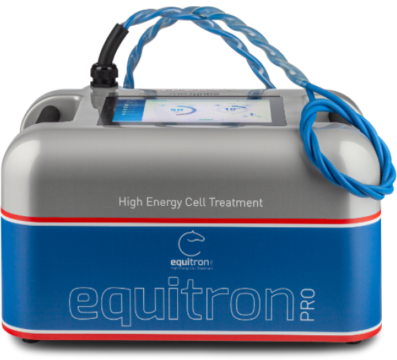
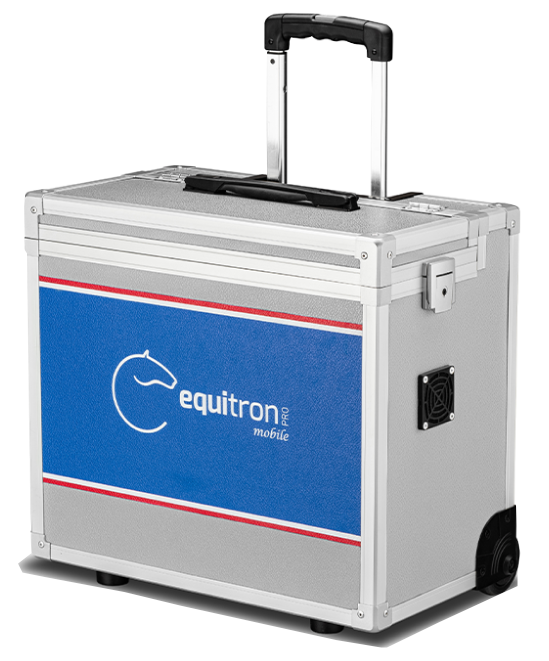

equitron-pro setzt auf kompromisslose Innovation. High-End-Technologie erzeugt einzigartige Therapie-Möglichkeiten und höchsten Komfort.
Gleichzeitig setzt das Design neue Maßstäbe im stets modernen Behandlungs-Umfeld.Einfach dosierbare Hochfrequenzstrom Ader

ANTIBAKTERIELLE BEHANDLUNGS - SCHLAUFE
Sicheres Handling durch 9fach isolierte Behandlungsschlaufe
< 20cm Eindringtiefe


Anwendungen
-
SCHMERZEN UND ENTZÜNDUNGENequitron-pro hat eine schmerzstillende und entzündungshemmende Wirkung.
-
REGENERATIONequitron-pro unterstützt und beschleunigt Heilungsprozesse und fördert die Regeneration ihres Pferdes.
-
STIMULATION DER MUSKULATURPferde sollen sich frei und locker bewegen-Verspannungen können da beeinträchtigen.
-
PRÄVENTIONequitron-pro kann man präventiv einsetzen, um Erkrankungen und Verletzungen vorzubeugen.
Technologie
Equitron-pro wirkt auf zellulärer ebene und hat einen direkten und positiven
einfluss
auf die genexpression des körpers. Zum Beispiel geschlossen wird und der bruch
wieder
heilt.
Equitron-pro wirkt auf zellulärer ebene und hat einen direkten und positiven
einfluss
auf die genexpression des körpers. Zum Beispiel entsteht pression dafür , dass die
wunde
möglichst schnell geschlossen wird und der bruch wieder heilt.

- Es werden Signale von den betroffenen Stellen ausgesendet, im Gehirn verarbeitet und anschließend in den Zellen die entsprechenden Gene aktiviert.
- Durch die Aktivierung der Gene werden Proteine hergestellt, die dann die Verletzung heilen.
- Nach nur einer Behandlung mit equitron-pro wird die Produktion dieser Proteine enorm gesteigert-und somit der Heilungsprozess beschleunigt.
Produkte

equitron-pro
equitron-pro mobile

Technologie
Equitron-pro wirkt auf zellulärer ebene und hat einen direkten und positiven einfluss
auf die genexpression des Körpers. zum Beispiel geschlossen wird und der bruch wieder
heilt.
Equitron-pro wirkt auf zellulärer ebene und hat einen direkten und positiven Einfluss auf die genexpression des Körpers. Zum beispiel entsteht pression dafür , dass die wunde möglichst schnell geschlossen wird und der Bruch wieder heilt.
equitron-pro wirkt auf zellulärer ebene und hat einen direkten und positiven Einfluss auf die genexpression des Körpers. Zum beispiel entsteht pression dafür.
Durch die Aktivierung
der Gene werden
“Equitron-pro wirkt auf zellulärer ebene und hat einen direkten und positiven einfluss auf die genexpression des körpers. Zum Beispiel geschlossen wird und der bruch wieder heilt”.

Technologie

kontaktiere uns
Equitron-pro wirkt auf zellulärer ebene und hat einen direkten und positiven einfluss
auf die genexpression des körpers. Zum beispiel geschlossen wird und der bruch wieder
heilt.